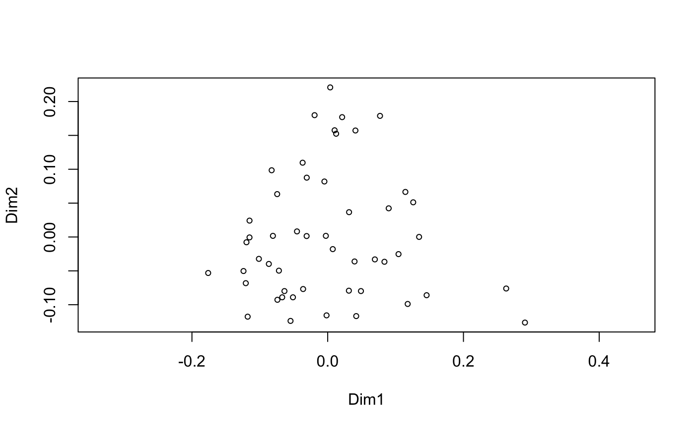

Design your own Dissimilarities
designdist.RdFunction designdist lets you define your own dissimilarities
using terms for shared and total quantities, number of rows and number
of columns. The shared and total quantities can be binary, quadratic
or minimum terms. In binary terms, the shared component is number of
shared species, and totals are numbers of species on sites. The
quadratic terms are cross-products and sums of squares, and minimum
terms are sums of parallel minima and row totals. Function
designdist2 is similar, but finds dissimilarities among two
data sets. Function chaodist lets you define your own
dissimilarities using terms that are supposed to take into account the
“unseen species” (see Chao et al., 2005 and Details in
vegdist).
Usage
designdist(x, method = "(A+B-2*J)/(A+B)",
terms = c("binary", "quadratic", "minimum"),
abcd = FALSE, alphagamma = FALSE, name, maxdist)
designdist2(x, y, method = "(A+B-2*J)/(A+B)",
terms = c("binary", "quadratic", "minimum"),
abcd = FALSE, alphagamma = FALSE, name, maxdist)
chaodist(x, method = "1 - 2*U*V/(U+V)", name)Arguments
- x
Input data.
- y
Another input data set: dissimilarities will be calculated among rows of
xand rows ofy.- method
Equation for your dissimilarities. This can use terms
Jfor shared quantity,AandBfor totals,Nfor the number of rows (sites) andPfor the number of columns (species) or inchaodistit can use termsUandV. The equation can also contain any R functions that accepts vector arguments and returns vectors of the same length.- terms
How shared and total components are found. For vectors
xandythe"quadratic"terms areJ = sum(x*y),A = sum(x^2),B = sum(y^2), and"minimum"terms areJ = sum(pmin(x,y)),A = sum(x)andB = sum(y), and"binary"terms are either of these after transforming data into binary form (shared number of species, and number of species for each row).- abcd
Use 2x2 contingency table notation for binary data: \(a\) is the number of shared species, \(b\) and \(c\) are the numbers of species occurring only one of the sites but not in both, and \(d\) is the number of species that occur on neither of the sites.
- alphagamma
Use beta diversity notation with terms
alphafor average alpha diversity for compared sites,gammafor diversity in pooled sites, anddeltafor the absolute value of difference of averagealphaand alpha diversities of compared sites. TermsAandBrefer to alpha diversities of compared sites.- name
The name you want to use for your index. The default is to combine the
methodequation andtermsargument.- maxdist
Theoretical maximum of the dissimilarity, or
NAif index is open and has no absolute maximum. This is not a necessary argument, but only used in some vegan functions, and if you are not certain about the maximum, it is better not supply any value.
Details
Most popular dissimilarity measures in ecology can be expressed with
the help of terms J, A and B, and some also involve
matrix dimensions N and P. Some examples you can define in
designdist are:
A+B-2*J | "quadratic" | squared Euclidean |
A+B-2*J | "minimum" | Manhattan |
(A+B-2*J)/(A+B) | "minimum" | Bray-Curtis |
(A+B-2*J)/(A+B) | "binary" | Sørensen |
(A+B-2*J)/(A+B-J) | "binary" | Jaccard |
(A+B-2*J)/(A+B-J) | "minimum" | Ružička |
(A+B-2*J)/(A+B-J) | "quadratic" | (dis)similarity ratio |
1-J/sqrt(A*B) | "binary" | Ochiai |
1-J/sqrt(A*B) | "quadratic" | cosine complement |
1-phyper(J-1, A, P-A, B) | "binary" | Raup-Crick (but see raupcrick) |
The function designdist can implement most dissimilarity
indices in vegdist or elsewhere, and it can also be
used to implement many other indices, amongst them, most of those
described in Legendre & Legendre (2012). It can also be used to
implement all indices of beta diversity described in Koleff et
al. (2003), but there also is a specific function
betadiver for the purpose.
If you want to implement binary dissimilarities based on the 2x2
contingency table notation, you can set abcd = TRUE. In this
notation a = J, b = A-J, c = B-J, d = P-A-B+J.
This notation is often used instead of the more more
tangible default notation for reasons that are opaque to me.
With alphagamma = TRUE it is possible to use beta diversity
notation with terms alpha for average alpha diversity and
gamma for gamma diversity in two compared sites. The terms
are calculated as alpha = (A+B)/2, gamma = A+B-J and
delta = abs(A-B)/2. Terms A and B are also
available and give the alpha diversities of the individual compared
sites. The beta diversity terms may make sense only for binary
terms (so that diversities are expressed in numbers of species), but
they are calculated for quadratic and minimum terms as well (with a
warning).
Function chaodist is similar to designgist, but uses
terms U and V of Chao et al. (2005). These terms are
supposed to take into account the effects of unseen species. Both
U and V are scaled to range \(0 \dots 1\). They take
the place of A and B and the product U*V is used
in the place of J of designdist. Function
chaodist can implement any commonly used Chao et al. (2005)
style dissimilarity:
1 - 2*U*V/(U+V) | Sørensen type |
1 - U*V/(U+V-U*V) | Jaccard type |
1 - sqrt(U*V) | Ochiai type |
(pmin(U,V) - U*V)/pmin(U,V) | Simpson type |
Function vegdist implements Jaccard-type Chao distance,
and its documentation contains more complete discussion on the
calculation of the terms.
Value
designdist returns an object of class dist.
References
Chao, A., Chazdon, R. L., Colwell, R. K. and Shen, T. (2005) A new statistical approach for assessing similarity of species composition with incidence and abundance data. Ecology Letters 8, 148–159.
Koleff, P., Gaston, K.J. and Lennon, J.J. (2003) Measuring beta diversity for presence–absence data. J. Animal Ecol. 72, 367–382.
Legendre, P. and Legendre, L. (2012) Numerical Ecology. 3rd English ed. Elsevier
Note
designdist does not use compiled code, but it is based on
vectorized R code. The designdist function can be much
faster than vegdist, although the latter uses compiled
code. However, designdist cannot skip missing values and uses
much more memory during calculations.
The use of sum terms can be numerically unstable. In particularly,
when these terms are large, the precision may be lost. The risk is
large when the number of columns is high, and particularly large with
quadratic terms. For precise calculations it is better to use
functions like dist and vegdist which are
more robust against numerical problems.
Examples
data(BCI)
## Four ways of calculating the same Sørensen dissimilarity
d0 <- vegdist(BCI, "bray", binary = TRUE)
d1 <- designdist(BCI, "(A+B-2*J)/(A+B)")
d2 <- designdist(BCI, "(b+c)/(2*a+b+c)", abcd = TRUE)
d3 <- designdist(BCI, "gamma/alpha - 1", alphagamma = TRUE)
## Arrhenius dissimilarity: the value of z in the species-area model
## S = c*A^z when combining two sites of equal areas, where S is the
## number of species, A is the area, and c and z are model parameters.
## The A below is not the area (which cancels out), but number of
## species in one of the sites, as defined in designdist().
dis <- designdist(BCI, "(log(A+B-J)-log(A+B)+log(2))/log(2)")
## This can be used in clustering or ordination...
ordiplot(cmdscale(dis))
#> species scores not available

## ... or in analysing beta diversity (without gradients)
summary(dis)
#> Min. 1st Qu. Median Mean 3rd Qu. Max.
#> 0.2733 0.3895 0.4192 0.4213 0.4537 0.5906